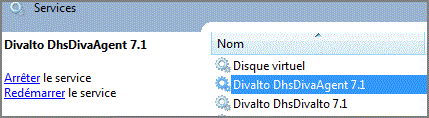
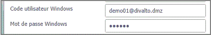
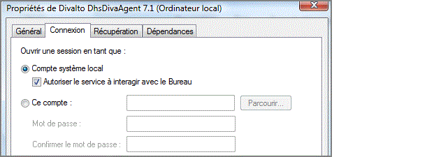

Les applications Diva lancées depuis le client léger sont exécutées, sur le serveur d’applications, par le service DhsDivaAgent (qui doit donc être démarré sur le serveur) :

Avant d’exécuter un programme, ce service s’impersonne avec le compte de l’utilisateur Windows du client. Le programme Diva s’exécute donc sous ce compte utilisateur et en hérite les droits. C’est pourquoi le compte Windows et son mot de passe doivent être renseignés dans les options avancées de connexion.
Le compte peut-être un compte local au serveur ou un compte du Domaine (dans ce cas, on écrit User@Domaine) :

Attention : Pour réaliser l’opération d’impersonnation, le service DhsDivaAgent doit être autorisé à interagir avec le bureau :
